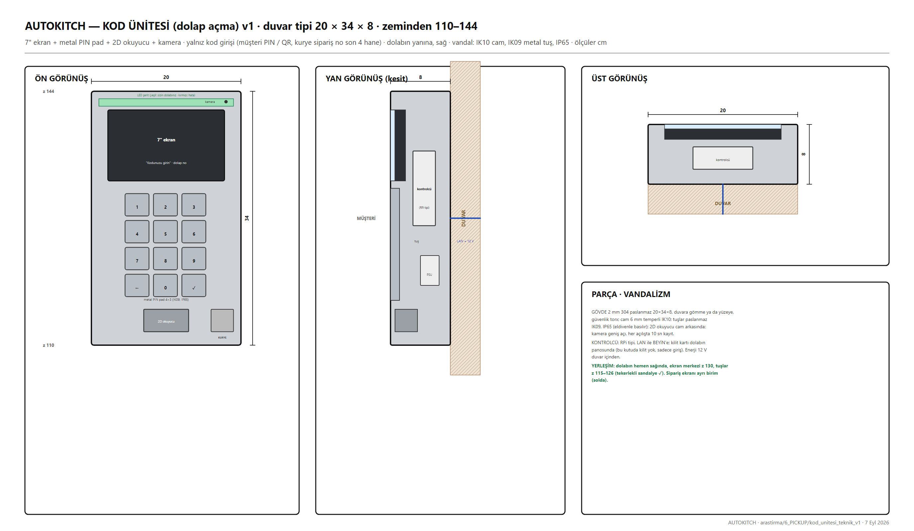

7" ekran + metal PIN pad + 2D okuyucu + kamera. Yalnız kod girişi, 3 saniyelik iş. SERVICE sırtında, dolabın yanında.
1 · Ne yapar · çalışma senaryosu
MÜŞTERİ: SMS kodu ya da fişteki 4 hane → dolap açılır, LED yanar, ekranda "Dolap 7".
KURYE: "Kurye" tuşu → sipariş numarasının son 4 hanesi → dolap açılır.
Yanlış 3 deneme → 2 dk kilit; kamera her açılışta 10 sn kayıt.
2 · Özellikler · karar özeti
Gövde2 mm 304, 20×34×8, z 110–144; cam 6 mm IK10; tuşlar paslanmaz IK09, IP65İçRPi tipi kontrolcü, LAN ile BEYİN'e; kilit kartı dolabın panosundaYerleşimSERVICE sırtında, ekranın sağında; ekran merkezi z 130, tuşlar z 115–126
3 · Teknik resimler

Kod ünitesi v1 — ön / yan / üst
4 · Tedarikçiler · fiyatlar
Tedarikçi / ürün
Ne
Fiyat / durum
Vandal-proof metal PIN pad
IK09 IP65
Çin / Storm Interface
2D okuyucu modülü
cam arkası
Honeywell / Çin
RPi + 7" ekran
kontrolcü
—
5 · Soru işaretleri · açık konular
#
Problem
Durum
Çözüm / not
D4
Kod kaynağı (platformlar üretmiyor)
ÖNERİ VAR
BEYİN üretir
6 · Sürüm geçmişi
v1 (7 Eyl)
AUTOKITCH · HAT · Yol C canlı tasarım defteri · kaynak: arastirma/ (DUZEN.md, PROBLEMLER.md, paftalar) · 7 Eyl 2026